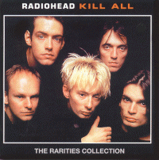

Kill All: The Rarities Collection
?
Tracks 1-3 recorded for BBC2 Later... With Jools Holland 31/May/97
<1> Airbag
<2> No Surprises
<3> Paranoid Android
Track 4 from soundtrack to the film Romeo + Juliet
<4> Talk Show Host (Nellee Hooper Remix)
Track 5 by Sparklehorse (from EMI Come Again compilation)
<5> Wish You Were Here feat. Thom Yorke (Pink Floyd Cover)
Tracks 6-8 acoustic from CBC Studios, Vancouver 22/Mar/96
<6> Street Spirit [Fade Out]
<7> Killer Cars
<8> Wonderwall (Oasis cover, partial)
Track 9-11 recorded for 'Just Passin Thru', Rockville, Maryland 11/Sep/96
<9> Lucky
<10> High & Dry
<11> Fake Plastic Trees
Tracks 12 recorded for Johnnie Walker, BBC Radio One 8/Jun/95
<12> Subterranean Homesick Alien
Track 13 recorded for KROQ, Los Angeles 95
<13> Creep
Track 14 from single
<14> Pop is Dead
Tracks 15-16 recorded for Evening Session, BBC Radio One 28/May/97
<7> Climbing up the Walls
<8> Exit Music [For a Film]
Type of recording : ?
Quality :